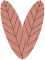
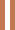

Fast Fashion
Iets is pas duurzaam als het mens, dier en natuur niet schaadt. Fast fashion is daarom super
schadelijk, een paar kenmerken zijn:
- Hoge omloopsnelheid, door zich snel opvolgende
collecties
- Productie is tegen extreem lage lonen
- Milieu impact is hoog
Inmiddels zijn veel fast fashion ketens zoals H&M en Zara met duurzamere collecties gekomen. Deze
blijken echter toch niet zo duurzaam te zijn als gezegd, dat heet ook wel greenwashing. Toch is
tweedehands of bij een duurdere duurzame winkel iets kopen niet altijd een optie. Hier zijn dus een
paar dingen waar je op kan letten als je toch bij fast fashion winkels koopt.

Waar op te letten bij het kopen van fast fashion:
De duurzame lijnen - Hoewel de duurzame lijnen nog steeds niet echt duurzaam zijn en
dus
eigenlijk bijna even slecht zijn, zou ik toch altijd daar even kijken. Vaak zit er een klein deel
gerycycled katoen in de kleding van deze lijnen. Dit maakt het toch iets duurzamer.

Het label - Op het label staat vaak vermeld wat voor stoffen er in de kleding zitten.
Zoek
vooral
naar woorden als biologisch en gerycycled. Op onze pagina “stof advies”
vind je nog tips en tops over de beste stoffen voor het kledingstuk dat je koopt.
Waar is het gemaakt? - Er staat altijd ergens op het kledingstuk vermeld waar het is
gemaakt.
Soms op het labeltje in de trui en soms op het merkje in de nek bijvoorbeeld. Dit is belangrijk om te
checken, want hoe verder weg geproduceerd, hoe meer CO2 uitstoot. Vaak zegt het ook wat over de
werkkwaliteit voor de werknemers. Zo hebben werknemers in Banglasdesh het vaak een stuk zwaarder dan die
in Spanje.